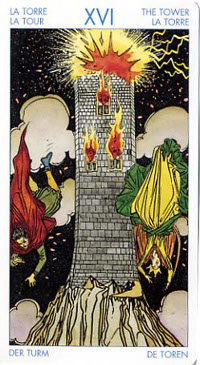

Башня
Это возлюбленные, с которыми мы уже сталкивались в картах Влюбленные и Дьявол, они символизируют собой два полярных принципа, которые в этот кризисный момент разделились в падении.
Поэтому данная карта нередко указывает на то, что сейчас в вашей жизни задействован некий мощный процесс, который может казаться драматичным или даже разрушительным, но который в конечном итоге окажется для вас благодатным.
Смысл карты: ты построил свой дом на песке. То, что ты считал незыблемой основой жизни, оказалось иллюзией и внезапно рассыпалось, как карточный домик. Все твои труды пропали даром. Не пытайся восстановить разрушенное: это уже не удастся.
Лучше пережди, переживи свое отчаяние – и принимайся строить новый дом. Скоро ты почувствуешь, как в тебя вливаются новые силы.
Прямое положение: страдание, горе, нужда, напасти, бедствие, позор, обман, гибель (разорение).
Значение: На практике Башня выпадает людям, действительно пережившим крах чего-то старого и привычного (работа, брак, вера в авторитеты) или ожидающим такого краха. Однако в прямом положении она говорит о необходимости этих перемен, ибо нельзя построить новое, не разрушив старого. А старое уже отжило, и реанимировать его – пустая трата времени и сил. Оказавшись в позиции прошлого, Башня может означать, что этап разрушения уже позади и пора начинать строить новое.
В чисто бытовом плане может означать просто конфликт, даже скандал, однако и скандал бывает необходим, чтобы добиться истины.
Башня может иметь и буквальное значение, т.е. указывать на какой-то дом или строение, а также на исходящую от них опасность.
Башня говорит о том, что мы довольно долго считали свое положение стабильным и безопасным, и вдруг все рухнуло. При этом рушатся как раз те структуры и условности, которые мы уже превзошли, и они стали тесны нам. Речь может идти как о наших убеждениях или жизненных принципах, так и о работе, финансах, дружеских или иных отношениях, представлявшихся нам стабильными и неизменными. В любом случае Башня символизирует некую концепцию, которая долгое время обеспечивала нам уверенность в будущем, а возможно, и чувство защищенности, а теперь перестала соответствовать нашему возросшему уровню. Как правило, это является для нас сюрпризом: когда старая концепция внезапно рушится, многие воспринимают это как удар молнии. И, поскольку рушатся именно те структуры, которые составляли самую основу нашей уверенности, это часто выглядит как катастрофа. Лишь когда первый шок проходит, мы обнаруживаем, что, оказывается, избавились от давнишнего балласта. Осознание этого приходит само или в виде некой подсказки извне.
С картой "Башня" астрологически соотносится планета Марс.
В прямом положении карта символизирует конец существующей ситуации под влиянием внешних сил, причем неожиданный и очень быстрый. Развал существующего порядка жизни. Это внезапно принятое решение о смене места работы (или профессии), места жительства. Может означать также отказ от прежних взаимоотношений или очень суровое испытание любви или дружбы, после которого ваше мнение о близких вам людях резко меняется. Рядом с хорошими картами аркан сигнализирует о распаде существующего зла, предвещая конец черной полосы в жизни и избавление от тяжелого груза настоящего.
Все то, что мы видим на картине, - живое свидетельство всемогущества Судьбы или Божьей воли: им совершенно безразлично, какое место занимаете вы в иерархии этого мира. Пришло время, и ваш мирок безжалостно сметен силами, совладать с которыми не стоит и пытаться.
В личном раскладе эта карта свидетельствует о беспокойстве ума, неспособности сохранять хорошие отношения с окружающими (на которых при этом возводится вся вина за случившееся). К сожалению, атмосфера скандалов и выяснения отношений не только не утомляет вас - напротив, именно этот способ существования кажется вам наиболее осмысленным из всех возможных.
При раскладе на ситуацию вам, при появлении данного Аркана, следует собраться с духом и с достоинством встретить грядущие потрясения. Один период вашей жизни сменяется другим, причем происходит это весьма стремительно, а потому небезболезненно. Не старайтесь «укрыться» от грозящего вам краха - это не в ваших интересах.
Напротив, постарайтесь как можно быстрее пройти эту «полосу препятствий», ведь она лишь предваряет грядущий подъем и новые достижения!
В перевернутом виде она, наоборот, не советует торопиться с разрушением старых отношений и связей, лучше решить дело миром, избегая скандалов и конфликтов.
Для бизнесмена – совет бросить все и бежать, прихватив всю кассу, – или же, наоборот, нанять хорошего юриста и передать дело в суд, потому что шансы на выигрыш в обоих случаях выше, чем если просто сидеть и ждать, чем все закончится.